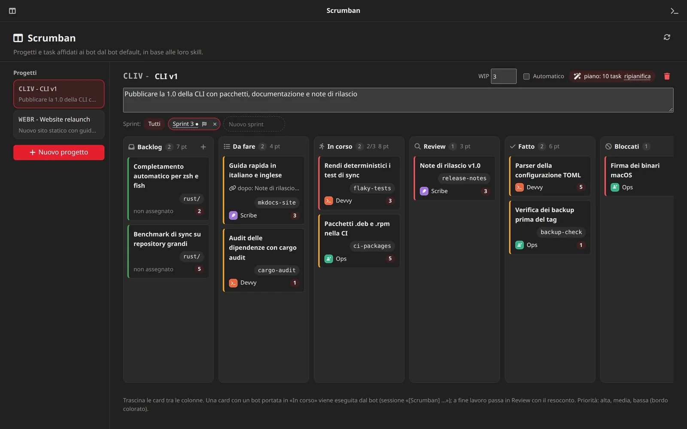
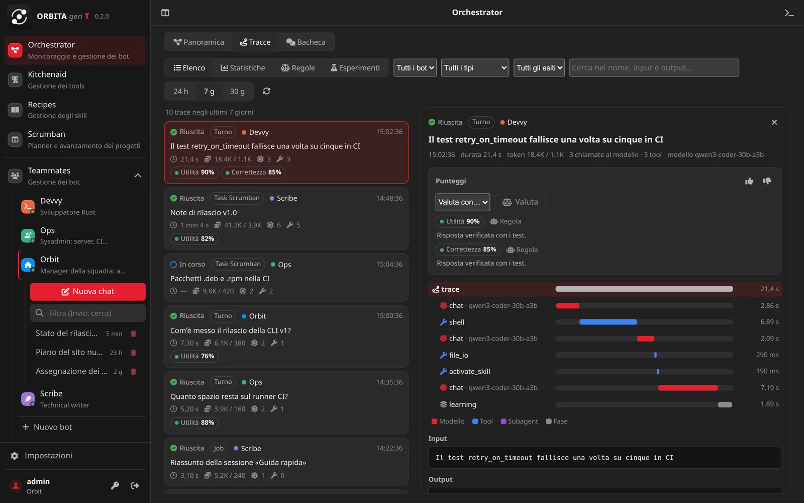
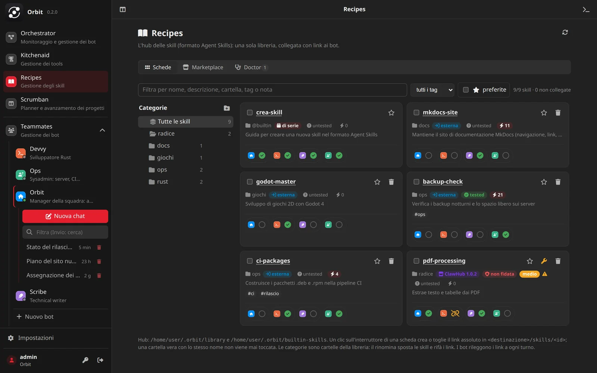
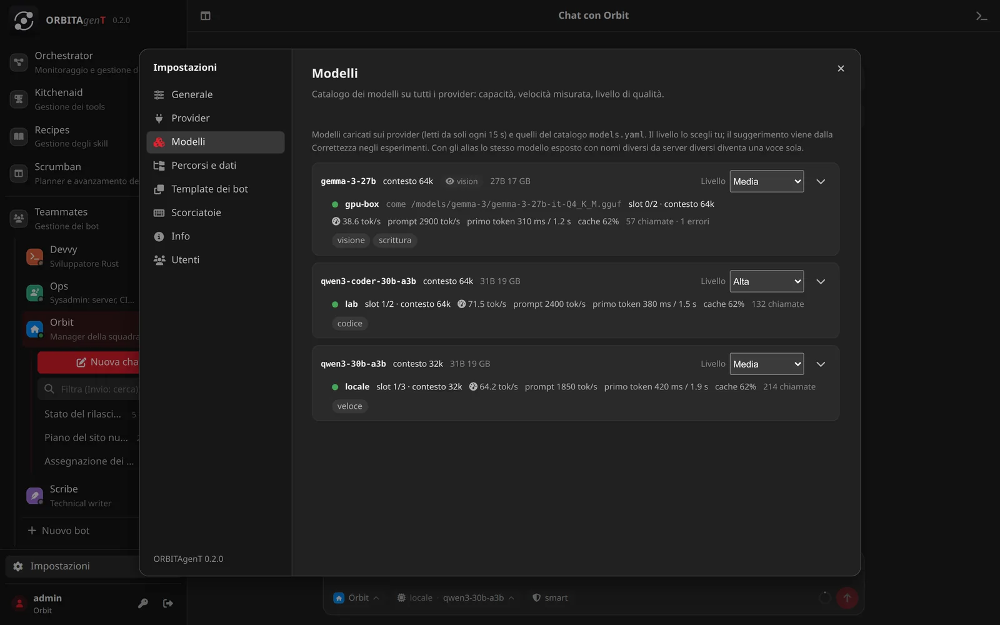

Un team, non un chatbot
Ogni bot è un agente isolato con anima, memoria, skill, sessioni e modello propri. Lavorano in parallelo e il bot predefinito fa da manager.
Beta privata · Linux e Windows
Orbit fa lavorare più bot fianco a fianco, ognuno con identità, memoria, skill e modello propri. Prendono i task da una scheda, si coordinano tra loro e imparano da quello che fanno — su server di modelli che controlli tu.
Entra in lista d'attesa Guardalo all'opera

Ogni bot è un agente isolato con anima, memoria, skill, sessioni e modello propri. Lavorano in parallelo e il bot predefinito fa da manager.
I bot trasformano le procedure riuscite in skill, e un ciclo Propose–Probe–Compose integrato prova le modifiche a un bot su domande reali prima che tu le adotti.
Orbit parla con server OpenAI-compatibili: llama.cpp, Strata e ds4 (DwarfStar 4). Memoria, tracce e valutazioni restano in file locali e SQLite — nessun servizio esterno.
Un solo eseguibile, scritto in Rust, con app desktop e la stessa interfaccia nel browser.
Ricerca full-text nelle sessioni passate, fatti durevoli in MEMORY.md e USER.md, compressione del contesto e ricerca per significato con gli embedding.
Le skill usano il formato aperto Agent Skills, stanno in una libreria e si collegano ai singoli bot. Ogni skill passa un'analisi del rischio prima di avere fiducia.
Shell, file, web e server MCP. Decidi tu cosa chiede il permesso: una volta, sempre o mai — più una guardia sui percorsi fuori dal workspace.
Definisci gli obiettivi in chat con il bot manager, ottieni un piano di task con dipendenze e lascia che i bot li eseguano — anche in automatico.
Tracce di ogni turno, tool e chiamata al modello, metriche euristiche, giudizi LLM-as-judge e oscuramento dei segreti, tutto dentro l'app.
Dataset dai progetti conclusi, varianti dell'harness (modello, anima, memoria, skill), confronto affiancato e selezione cieca da parte di un modello giudice.
I bot scrivono in canali condivisi e si mandano messaggi diretti, così i lavori lunghi su un server condiviso restano coordinati.
Un registro dal vivo di server e modelli con stato, velocità e contesto per posto, con metriche native per llama.cpp e Strata. Un turno parte solo su un posto libero e può spostarsi su un altro server quando uno è pieno.
Multiutente con accessi per utente, segreti fuori dai file di configurazione e accesso con chiave di sicurezza FIDO2.
Interfaccia vera, dati dimostrativi.








Il miglioramento si misura, non si dà per scontato. Il bot non cambia finché non adotti la modifica.
Il bot risponde a domande ricavate dai tuoi progetti conclusi, valutate per correttezza rispetto a ciò che è stato fatto davvero.
Il modello propone due modifiche: come lavora il bot e cosa deve sapere — come nuova anima, memoria o skill collegate.
Ogni proposta valida diventa un esperimento; una terza tiene solo le modifiche che hanno aiutato.
Un giudice sceglie la risposta migliore per ogni domanda senza sapere quale bot l'ha scritta. A parità resta la base.
Se vince una variante vedi cosa è cambiato e perché, e la adotti con un clic. La versione precedente resta in backup.
Scrivici e raccontaci per cosa useresti un team di agenti. Ti ricontattiamo quando c'è una build pronta per te.
info@orbitagent.space